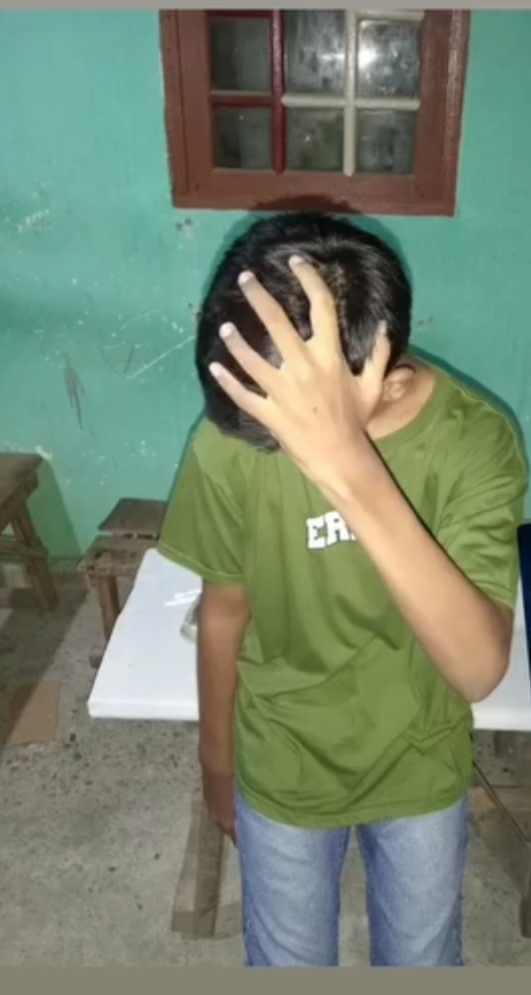

Website Profil Personal
Website portofolio modern dengan foto statis dari file, mode gelap/terang, dan desain glassmorphism interaktif.
👋 Halo, Selamat Datang di Portofolio Saya
Pelajar aktif di SMK Negeri 1 Bangkinang yang bersemangat mempelajari pengembangan web modern, desain antarmuka pengguna, dan teknologi digital kreatif.

m.DICKA.ERMANSYAH
Mengenal lebih dekat latar belakang, semangat belajar, dan tujuan saya.
Halo! Saya m.DICKA.ERMANSYAH, seorang pelajar yang memiliki rasa ingin tahu tinggi dan ketertarikan mendalam pada dunia teknologi informasi serta pengembangan web.
Menempuh pendidikan di SMK Negeri 1 Bangkinang memberikan saya pengalaman praktik yang berharga, melatih kedisiplinan, serta mengajarkan cara membangun karya digital yang bermanfaat.
Di waktu luang, saya senang mengeksplorasi tampilan antarmuka website modern, mengerjakan proyek mandiri, dan terus mengasah keterampilan pemrograman.
Kemampuan teknis yang terus saya pelajari dan kembangkan.
Jejak langkah akademik dan pencapaian pembelajaran saya.
Mendalami praktik pemrograman web, perakitan serta konfigurasi sistem komputer, dan aktif berkolaborasi dalam proyek praktik kejuruan.
Merancang dan membangun berbagai antarmuka website interaktif berbasis HTML, CSS, dan JavaScript murni dengan mengutamakan kecepatan dan estetika.
Menyelesaikan pendidikan tingkat pertama dan mulai menemukan ketertarikan besar pada dunia komputer serta logika pemrograman.
Beberapa hasil karya dan latihan pemrograman yang telah saya buat.
Website portofolio modern dengan foto statis dari file, mode gelap/terang, dan desain glassmorphism interaktif.
Aplikasi web pencatat jadwal pelajaran dan tugas sekolah harian dengan penyimpanan otomatis di browser pengguna.
Halaman cerita interaktif yang mendokumentasikan pengalaman berkesan sejak mendaftar hingga belajar di SMK N 1 Bangkinang.
Punya pertanyaan, saran, atau ingin berkolaborasi? Silakan kirim pesan.
Saya terbuka untuk diskusi seputar pemrograman web, tugas sekolah, maupun proyek kreatif bersama teman-teman.
Menjelang kelulusan dari bangku SMP, saya mulai memikirkan secara serius ke mana arah pendidikan berikutnya akan ditempuh. Sejak lama saya memiliki ketertarikan kuat pada bidang komputer, pemrograman web, dan keterampilan praktik yang langsung bisa diterapkan.
Di antara berbagai pilihan sekolah menengah di Kabupaten Kampar, nama SMK Negeri 1 Bangkinang selalu menjadi pilihan utama saya. Sekolah ini dikenal memiliki lingkungan belajar yang disiplin, fasilitas laboratorium praktik yang lengkap, serta rekam jejak prestasi yang membanggakan.
Masa Penerimaan Peserta Didik Baru (PPDB) menjadi pengalaman yang penuh antusiasme sekaligus mendebarkan. Saya menyiapkan seluruh dokumen persyaratan dengan cermat, berdiskusi dengan keluarga mengenai jurusan yang paling tepat, dan terus berdoa agar diberikan hasil terbaik.
"Saat melihat nama saya resmi tercantum sebagai siswa yang diterima di SMK Negeri 1 Bangkinang, rasa syukur dan bangga langsung menyelimuti hati saya dan orang tua."
Momen pengumuman tersebut menjadi penyemangat besar bagi saya untuk belajar lebih sungguh-sungguh dan membuktikan bahwa pilihan ini adalah langkah terbaik.
Melangkahkan kaki ke halaman SMK Negeri 1 Bangkinang untuk pertama kalinya memberikan kesan yang tidak terlupakan. Melalui kegiatan Masa Pengenalan Lingkungan Sekolah (MPLS), saya berkenalan dengan bapak dan ibu guru yang membimbing penuh kesabaran serta teman-teman baru dari berbagai daerah di sekitar Bangkinang.
Suasana pembelajaran di SMK terasa sangat hidup karena memadukan teori kelas dengan praktik langsung, melatih tanggung jawab, kerja sama tim, dan kesiapan menghadapi dunia kerja.
Kini, sebagai siswa SMK Negeri 1 Bangkinang, saya bertekad untuk terus mengasah kemampuan di bidang teknologi web dan pengembangan digital. Website portofolio ini merupakan salah satu wujud nyata hasil proses belajar saya.
Saya percaya bahwa perjalanan di sekolah ini akan menjadi bekal berharga untuk meraih cita-cita dan memberikan kontribusi positif bagi keluarga, daerah Bangkinang, serta masa depan.